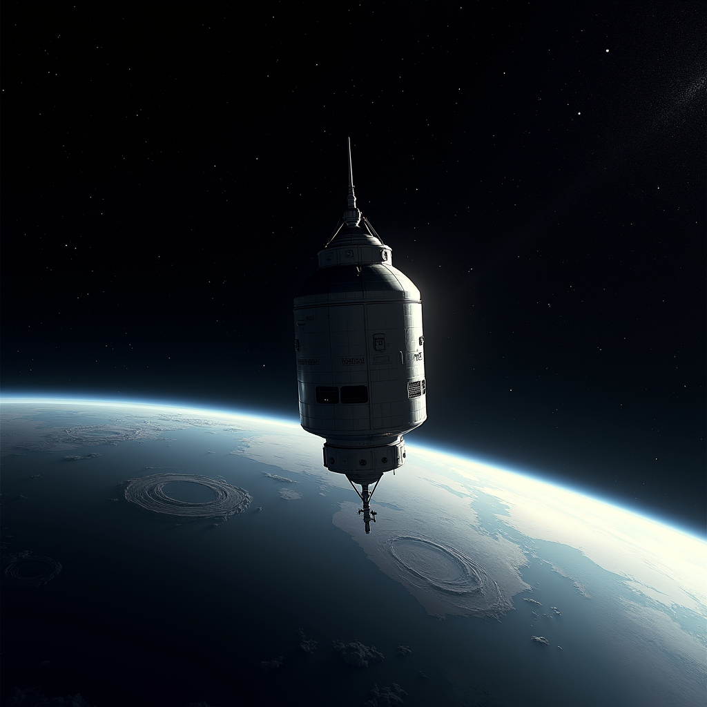
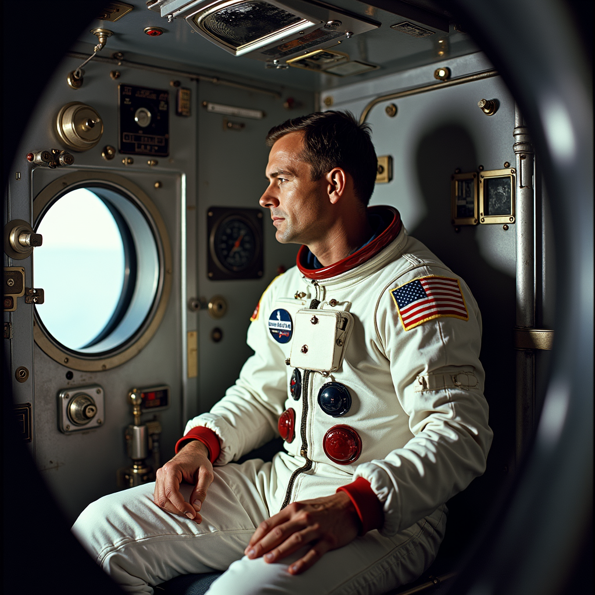
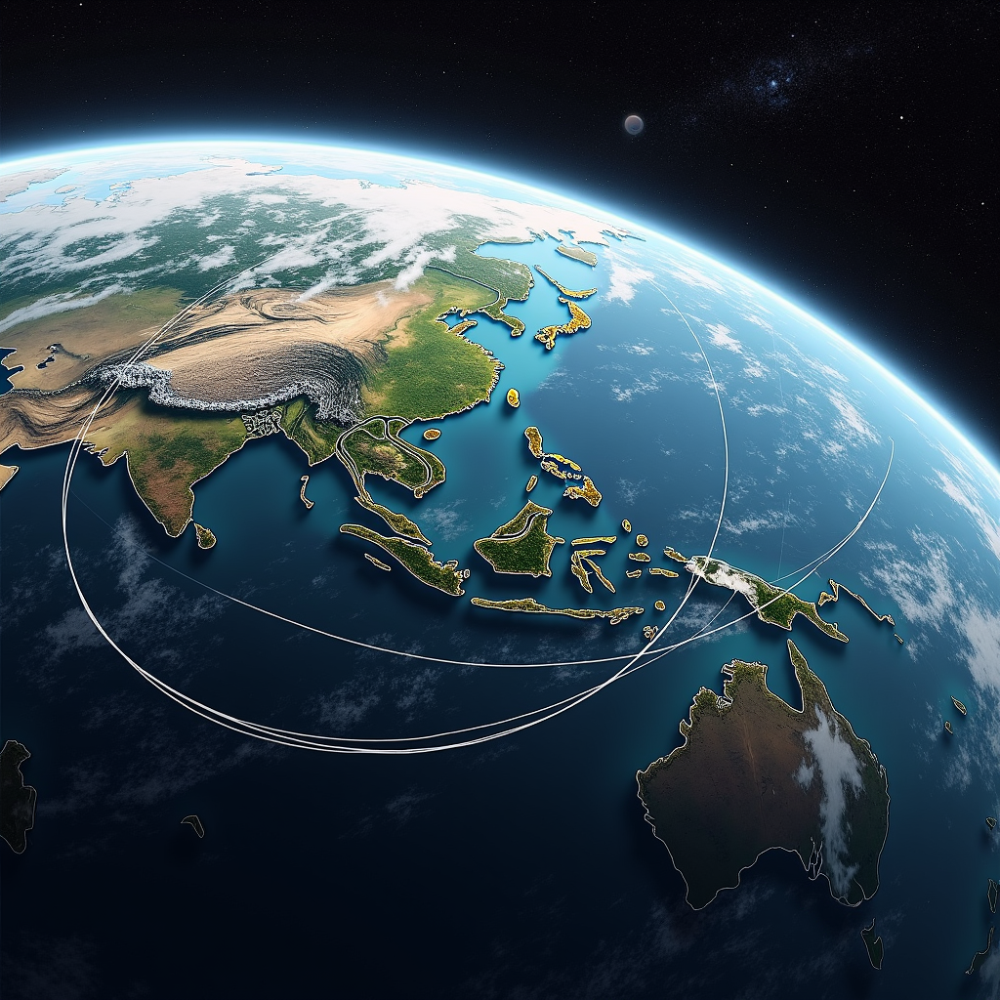
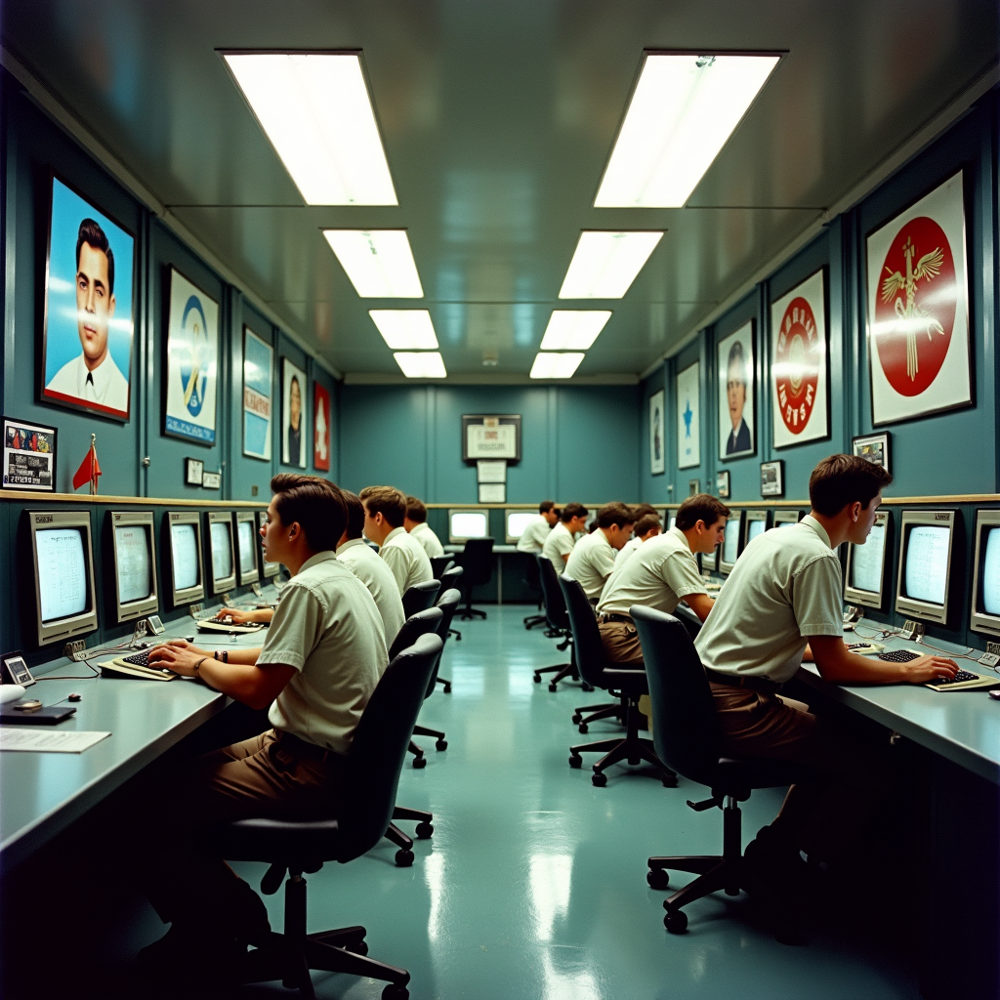

History of manned missions: The beginnings of the space age
The history of manned spaceflight begins on April 12, 1961, when Soviet cosmonaut Yuri Gagarin becomes the first human being to travel to space. Aboard Vostok 1, he completes a full orbit around the Earth in 108 minutes, traveling approximately 40,000 kilometers. This historic event marks a decisive turning point in space exploration and truly launches the space race between the superpowers of the time.
A few weeks later, on May 5, 1961, American astronaut Alan Shepard becomes the second man to reach space aboard Mercury-Redstone 3, although his suborbital flight lasts only 15 minutes. These two first flights mark the beginning of a series of increasingly ambitious missions, with the selection of new cosmonauts and astronauts by the two great powers.
The Mercury program and the first American steps
The Mercury program, launched by NASA in 1958, aims to place a man in orbit around the Earth. Between 1961 and 1963, six manned missions are successfully conducted. John Glenn becomes the first American astronaut to orbit the Earth on February 20, 1962, completing three orbits in 4 hours and 55 minutes aboard Mercury-Atlas 6. This mission restores American prestige after the initial Soviet success.
The Mercury program establishes numerous records and revolutionizes our understanding of human spaceflight. The missions ranged from 15 minutes to 34 hours, allowing astronauts to test survival systems and demonstrate that humans could function effectively in the space environment. The data collected during these missions becomes essential for future programs.
- Redstone 3 (Alan Shepard): May 5, 1961 - 15 minutes
- Liberty Bell 7 (Gus Grissom): July 21, 1961 - 15 minutes
- Mercury-Atlas 6 (John Glenn): February 20, 1962 - 4h55
- Aurora 7 (Scott Carpenter): May 24, 1962 - 4h56
- Sigma 7 (Wally Schirra): October 3, 1962 - 9h13
- Faith 7 (Gordon Cooper): May 15, 1963 - 34h19
The Soviet Voskhod and American Gemini programs
While the Soviets continue their successes with the Voskhod program, on October 12, 1964, a mission carries three cosmonauts for the first time. The space race intensifies with new challenges: the first extravehicular activity is performed by Alexei Leonov on March 18, 1965, conducting a 12-minute spacewalk outside the Voskhod 2 spacecraft.
NASA's Gemini program, which spans from 1965 to 1966, responds to Soviet advances by conducting ten manned missions. These flights demonstrate essential techniques: the docking of two spacecraft (successfully achieved on March 16, 1966 with Gemini 8), prolonged extravehicular activities, and orbital maneuvers. The Gemini program directly prepares the ground for the Apollo program.
The pinnacle of the Apollo program: The 1969 moon landing
July 20, 1969 remains forever etched in human history as the day of the first moon landing. Neil Armstrong and Buzz Aldrin land on the Moon aboard the Eagle lunar module of the Apollo 11 mission, while Michael Collins orbits the Moon. Neil Armstrong utters his famous words as he sets foot on the lunar surface: "That's one small step for man, one giant leap for mankind."
Between 1969 and 1972, six other Apollo missions successfully land humans on the Moon. In total, twelve astronauts walk on the lunar surface and return 382 kilograms of rocks and lunar soil samples to Earth. These major scientific missions generate a unique knowledge base about our natural satellite.
The Apollo missions represent the pinnacle of heavy crewed space missions, mobilizing more than 400,000 people at their peak and a budget of over 150 billion dollars (in current value). The Apollo 13 mission, although failing to land on the Moon due to an explosion, demonstrates the ingenuity and determination of NASA personnel and astronauts in overcoming crises in space.
- Apollo 11: July 20-21, 1969 (Armstrong and Aldrin)
- Apollo 12: November 19-20, 1969 (Conrad and Bean)
- Apollo 14: February 5-6, 1971 (Shepard and Mitchell)
- Apollo 15: July 30 - August 2, 1971 (Scott and Irwin)
- Apollo 16: April 21-23, 1972 (Young and Duke)
- Apollo 17: December 11-14, 1972 (Cernan and Schmitt)
Space stations and modern long-duration spaceflights
After the Apollo era, the focus shifted to long-duration spaceflight in low Earth orbit. The Skylab space station, launched in 1973, hosts three successive crews. Soviet cosmonauts progressively establish duration records, with Valentin Lebedev and Anatoli Berezovoy spending 211 days aboard Salyut 7 in 1982-1983.
The International Space Station, a joint project of space agencies from 15 nations, has been the symbol of international cooperation since 1998. It has continuously housed crews since November 2, 2000. Six-month missions have become standard, although missions lasting more than a year have taken place, notably Scott Kelly's stay of 340 consecutive days in orbit from 2015 to 2016.
The future of manned missions: Artemis and beyond
NASA's Artemis program aims to return astronauts to the Moon before 2025, with the goal of establishing a sustainable lunar base. In parallel, private companies such as SpaceX, Blue Origin, and Virgin Galactic are developing space tourism and commercial transport technologies. These new manned missions promise to open a new era of space exploration accessible to more people.
Future missions also target Mars, with space agencies considering crewed flights to the red planet in the 2030s to 2040s. These missions would represent a major technological leap, requiring voyages of several months and unprecedented autonomy for the crews.
"I see the Earth. It is magnificent." - Yuri Gagarin, during his first spaceflight, April 12, 1961



